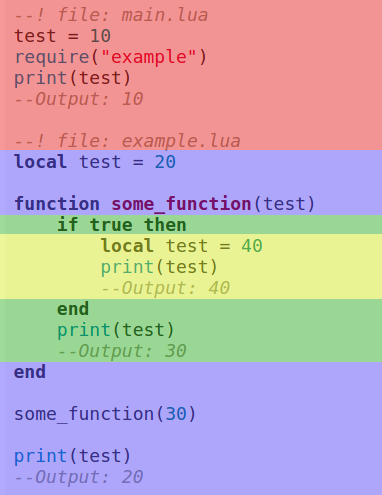

With multiple files, our code will look more organized, and easier to navigate. Create a new file called example.lua. Make sure it's in the same directory as main.lua.
Inside this file, create a variable. I will put --! file: at the top of the codeblock to make clear in what file you have to put the code.
--! file: example.lua
test = 20Now in main.lua, put print(test). When you run the game, you'll see that test equals nil. This is because we have to load the file first. We do this with require, by passing the filename as string as first argument.
--! file: main.lua
--Leave out the .lua
require("example")
print(test)We don't add the ".lua" in the filename, because Lua does this for us.
You can also put the file in a subdirectory, but in that case make sure to include the whole path.
--Use . instead of /
require("path.to.example")Now when you print test, after we loaded example.lua, you should see it says 20.
test in this case is what we call a global variable. It's a variable that we can use everywhere in our project. The opposite of a global variable, is a local variable. You create a local variable by writing local in front of the variable name.
--! file: example.lua
local test = 20Run the game to see test is once again nil. This is because of its scope.
Local variables are limited to their scope. In the case of test, the scope is the file example.lua. This means that test can be used everywhere inside that file, but not in other files.
If we were to create a local variable inside a block, like a function, if-statement or for-loop, then that would be the variable's scope.
--! file: example.lua
if true then
local test = 20
end
print(test)
--Output: niltest is nil, because we print it outside of its scope.
Parameters of functions are like local variables. Only existing inside the function.
To really understand how scope works, take a look at the following code:
--! file: main.lua
test = 10
require("example")
print(test)
--Output: 10--! file: example.lua
local test = 20
function some_function(test)
if true then
local test = 40
print(test)
--Output: 40
end
print(test)
--Output: 30
end
some_function(30)
print(test)
--Output: 20If you run the game, it should print: 40, 30, 20, 10. Let's take a look at this code step by step.
The first print is inside the if-statement, and it's 40. After the if-statement we print test again, and now it's 30, which is what we passed as argument. The parameter test was not affected by the test inside the if-statement. Inside the if-statement the local variable took priority over the parameter.
Outside of the function we also print test. This time it's 20. The test created a the start of example.lua was not affected by the test inside the function.
Lastly we print test in main.lua, and it's 10. The global variable was not affected by the local variables inside example.lua.
I made a visualization of the scope of each test to make it even more clear:

When creating a local variable, you don't have to assign a value right away.
local test
test = 20Like functions, files can return a value. If we put return 10 at the end of example.lua, and inside main.lua we do print(require("example")), you will see that it prints 10.
With require we can load other lua-files. When you create a variable you can use it in all files. Unless you create a local variable, which is limited to its scope. Local variables do not affect variables with the same name outside of their scope.